游记 | 日本
大阪
天守阁
这是我第二次来大阪，上次来还是八年前的冬天。那时我还在读初二，恍惚间我已经大学毕业。我对天守阁「てんしゅかく」和大阪城公园只有些模糊的印象，依稀记得一些关于织田信长和丰臣秀吉的典故。八年前来的时候，能听到阵阵乌鸦悠长的叫声，这次来却只看到寥寥几只，或许是季节的原因吧~


乘坐铁路交通到天王寺站。大阪铁路的露天站台不知有多少年历史了，然而古老的设计和交错的电线却并没有影响到整体的美观。顺着铁路的方向望去，有种简洁的美感。


一路走向新世界和通天阁。顺着新世界的街道抬头望去，路中间站着的通天阁被招牌和路灯簇拥着。据说这儿附近是拍摄通天阁的最佳机位。不过技术有限，差不多就行~


饭后（不知道为什么我们正中午去了一家居酒屋），一路走到了黑门市场。虽然只是普通的商业街，两边卖海鲜的小店传出了阵阵腥味。不过从市场的出入口望出去，正午阳光下街道让人不禁感叹，日剧中的风景走进了现实。
 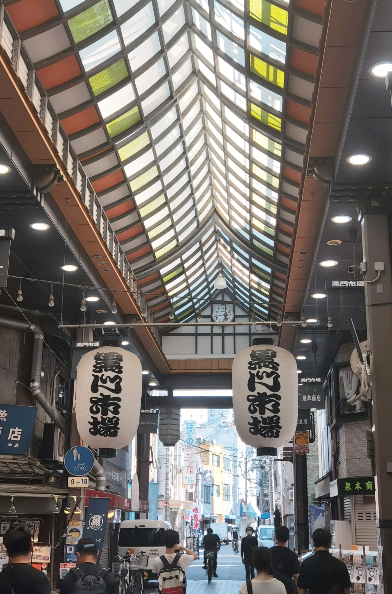
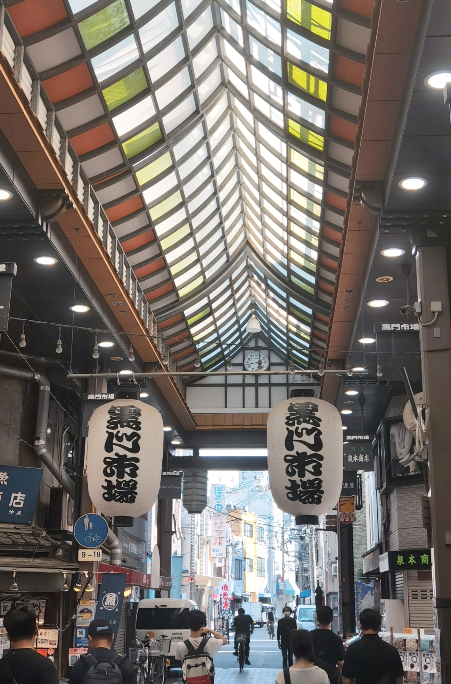
難波八坂「なんばはちさか」神社
穿梭在平常的巷子里，来到难波神社。日本街头遍地都是大大小小的神社，这座神社出名的原因多半是其中面目狰狞的巨大狮头神社。希望狮子能赶走厄运，让我抽卡的手气再好一些。
神社前密密麻麻挂着的祈福牌，仔细看去还有不少英文和汉语。其中一个 "Get my PhD degree at 2028" 的牌子令人印象深刻。
 |
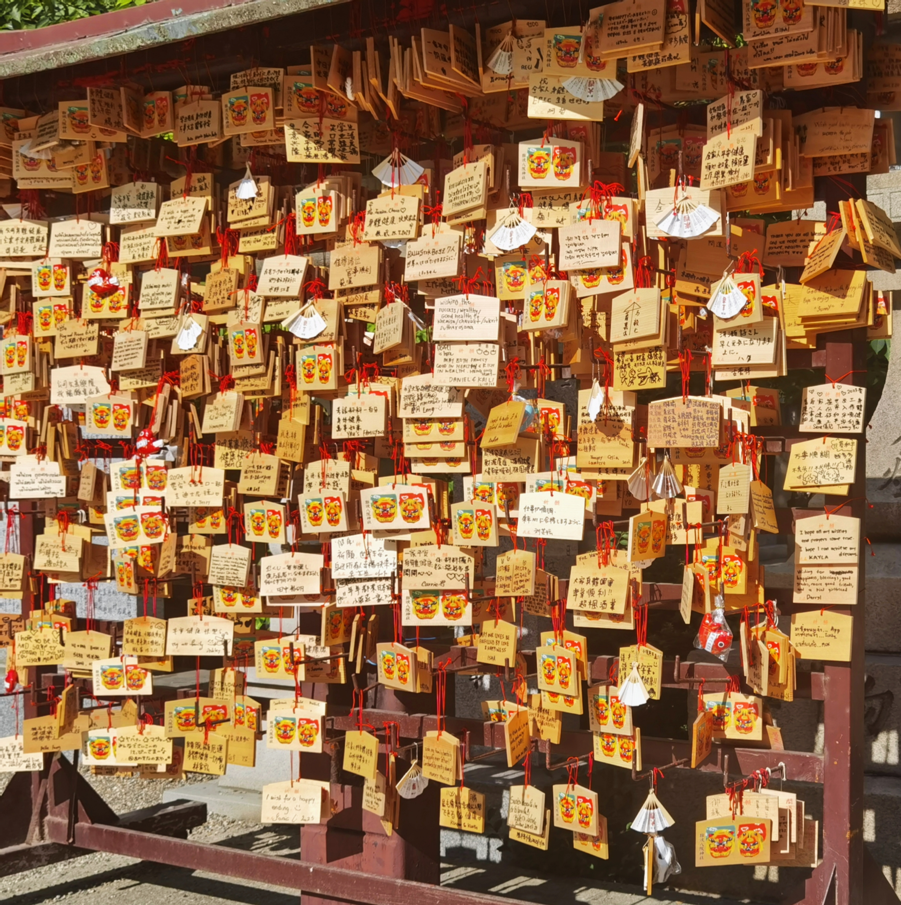 |
| 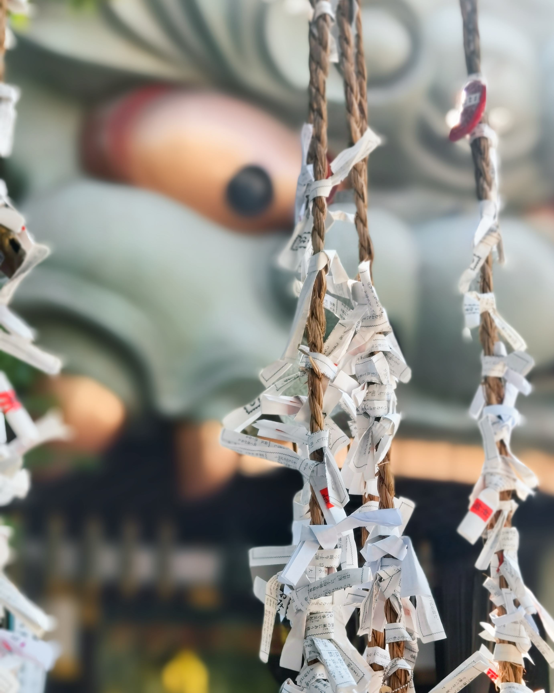 |
心斎橋 「しんさいばし」
京都
京都和大阪离得很近。早晨坐铁路离开大阪，我们入住在京都三条名店街。拉面馆的老板娘热情地教我们关西腔的「ありがとう」
来之前完全没有做过预先准备，商讨后我们决定先前往岚山。
 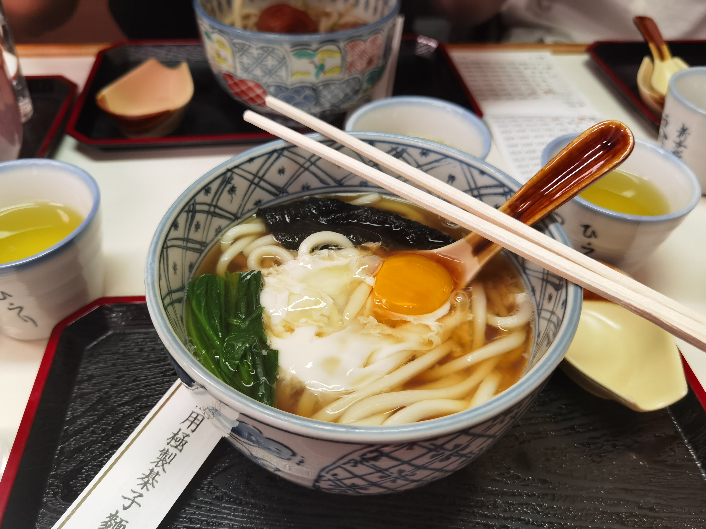
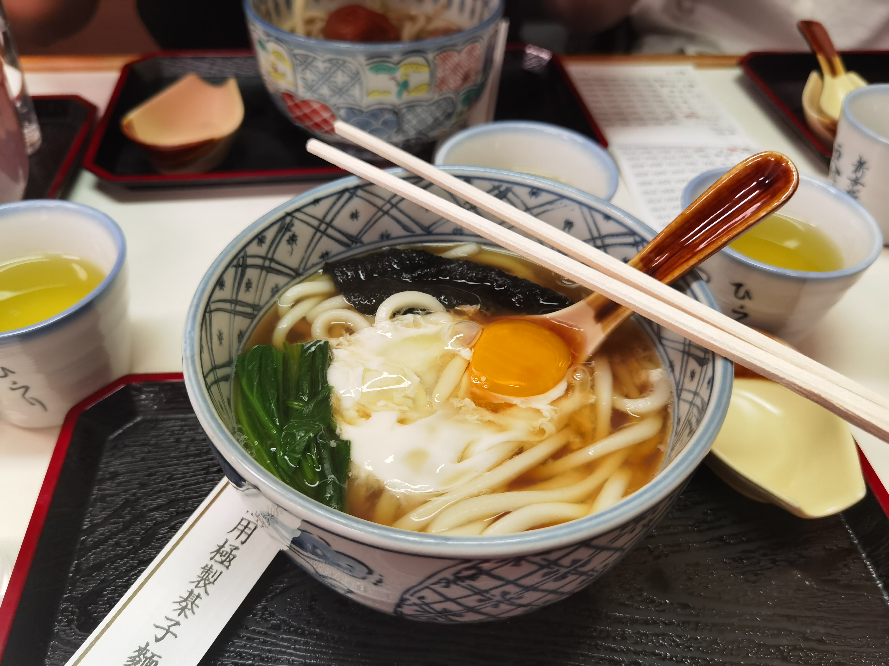
乘小火车通往岚山。路边从大到小排列着狸猫雕塑。据说狸猫「たぬき」和「他抜き」同音，大致有超越其他人的寓意。
 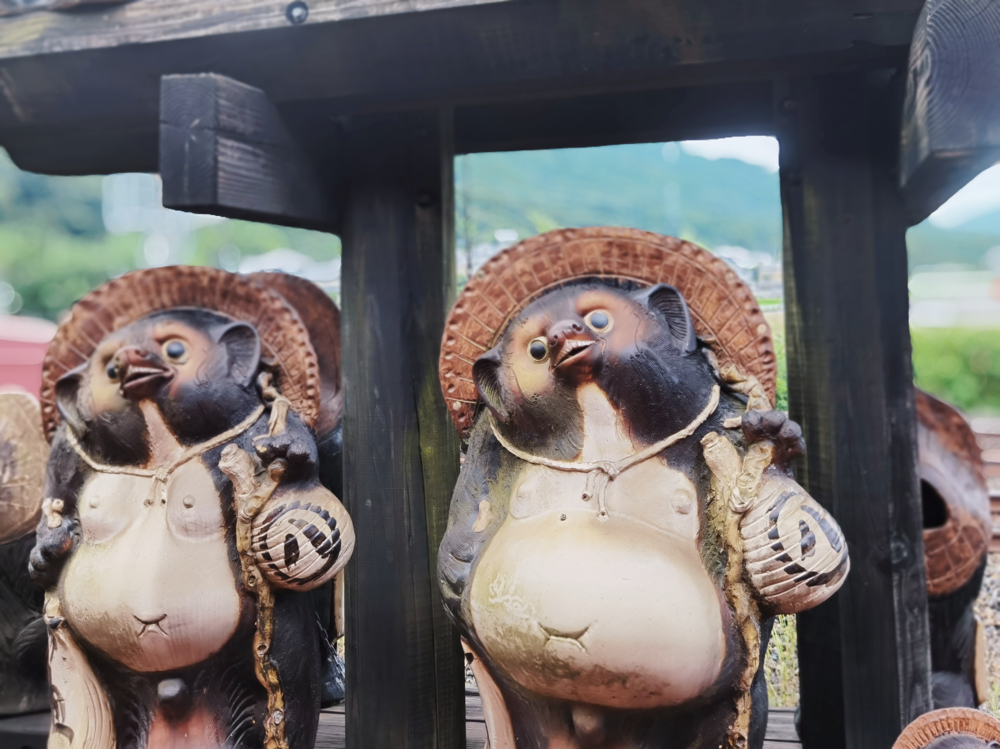
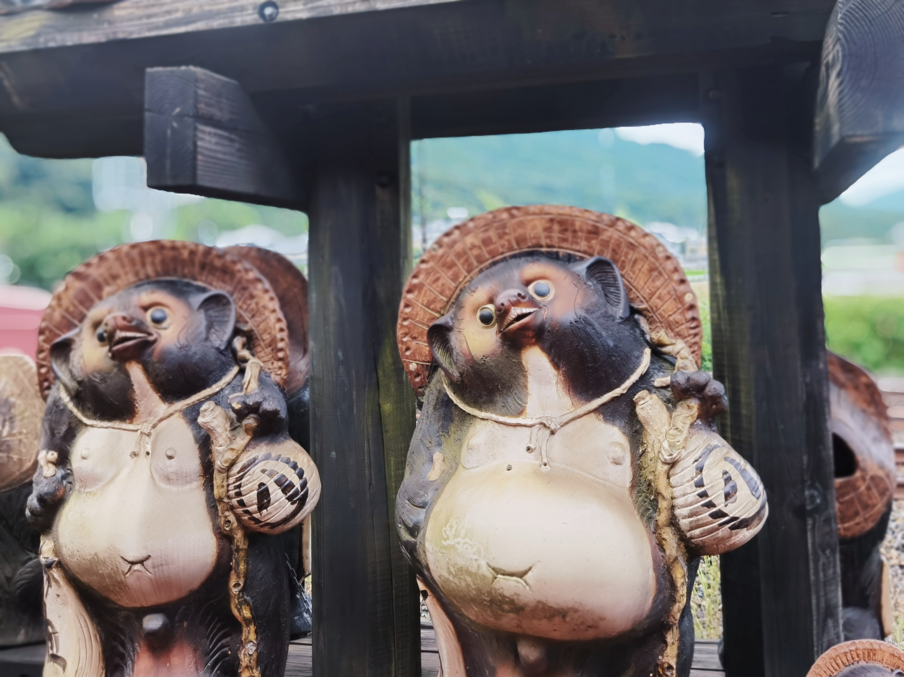
岚山夏天的岚山实话说没有太漂亮的景色。据说11月中旬开始枫叶才慢慢变成红色，8月的岚山只是普普通通的一座绿色的山罢了。 走进岚山是一片密密麻麻的竹林。我不禁回忆起春物里大老师在竹林小径自爆的名场面。事后了解到，这儿似乎就是圣地巡礼的其中一站~ |
 |


走下岚山，经过渡月桥。山下的的风景似乎比山上更好。
伏见稻荷大社
我们决定把伏见稻荷大社的行程放在晚上，事实证明这是个很不错的决定。
|
跟随 Google Map 奇妙的导航，我们沿着居民区蜿蜒的小路从侧门进入了神社。正值日落时分，西边仍挂着晚霞的余晖，眼见天色就要昏暗下去。居民区的小路路灯很少，路上没有半点声响，两旁的一户建里隐约透着光。我们不敢大声说话。 |
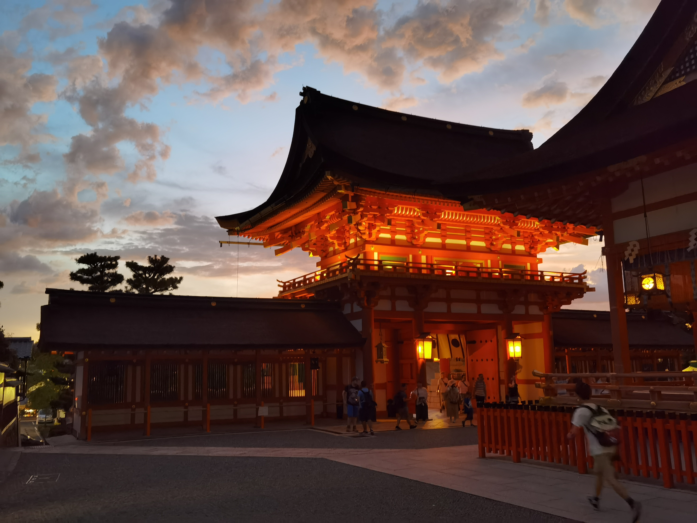 |
来之前我没有事先查过，到了伏见才发觉大社原是依山而建。我们绕过门口的大殿，向山上走去。
层层叠叠的鸟居望不见尽头。橙红色的鸟居显得非常挺拔，仿佛几个世纪前便已经矗立在此，恍惚间我总感觉它像要活过来一般。夜幕降临，稻荷大神的鸟居在庄重之外，又显出它神秘的一面。灯笼的光打在鸟居的侧面，又如同在烛光中琵琶掩面的女郎，一半明一半暗，张口诉说起几个世纪前的秘密。
|
我们继续开始了登山的脚步。今天已经走了两万步，但坡很缓，我也并没有疲惫的感觉。这条路比想像的要长得多，我们大约走了十几分钟，沿路的鸟居依旧密密麻麻。有的鸟居微微倾斜，有的则站得笔直，错落之间却又不让人感到凌乱。行进中光影变幻，眼前的道路却不见尽头。我不禁想象神明端坐在路的尽头等待着我，又不禁猜想路会不会无限延伸下去，让我越陷越深，永远迷失在此。不过就算今夜迷失在此，倒也没有什么遗憾了。 |
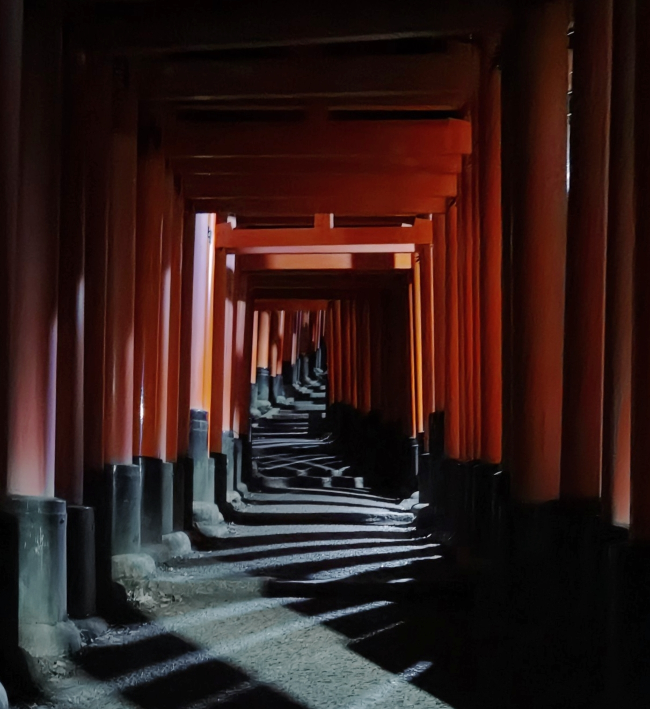 |
每个鸟居的背面几乎都刻着字。本以为是经文之类，在黑暗中仔细端详才发现，刻着的多是人名地名。大约是鸟居建造的捐赠者或是供奉神社的香客？


走到半路的时候，同行的有两人决定折返，而剩下的四人继续向前。在这充满神秘色彩的地方，我开玩笑说这是恐怖片最经典的桥段。「分兵两路」「不知死活地继续探险」有人打趣说，这儿数不清的鸟居都是从前的探险者变成的。虽然很有恐怖片的气氛，但神社静谧的小道却人一种奇妙的安心感，并没有让人感到害怕。

|
继续向上爬。到达山顶之前，遇到了一个三条路的交叉口。正犹豫时，一个京都老大爷用英文搭话。说沿着其中一条路走到底，再经过一条很黑的小路，就能看到整个京都、大阪的夜景。 走到头是一条狭窄的小路，路旁摆放着各式各样的小雕像、神龛，似乎看不到夜景。正打算往回走时，却看到一条没有铺石砖的泥路，路的尽头仿佛透着些光。我们壮着胆子往前走了十几步，城市的夜景一览无遗。 |
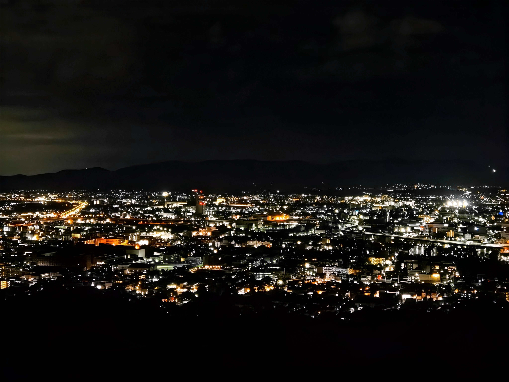 |
 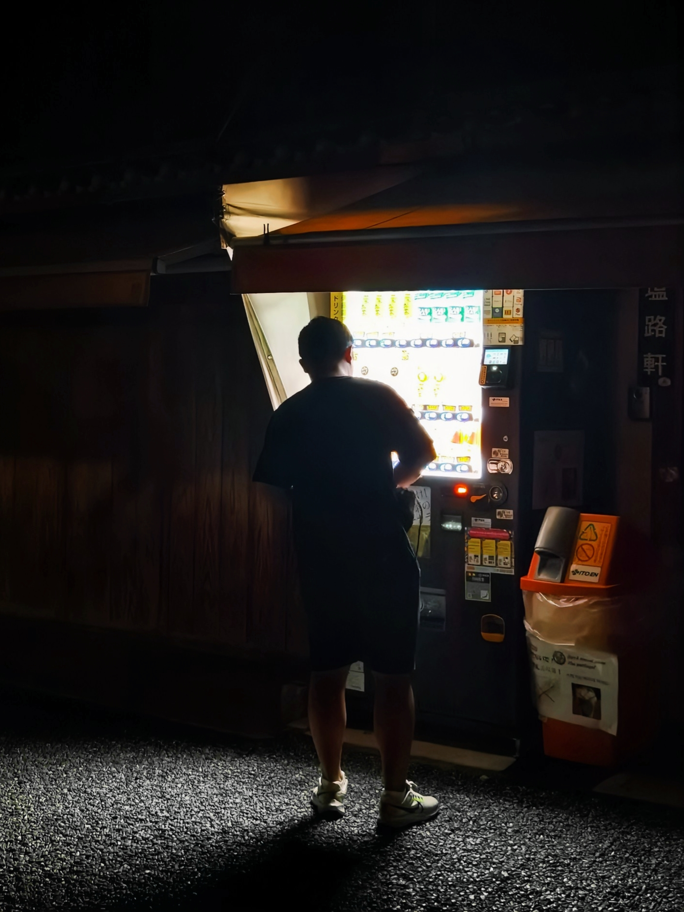
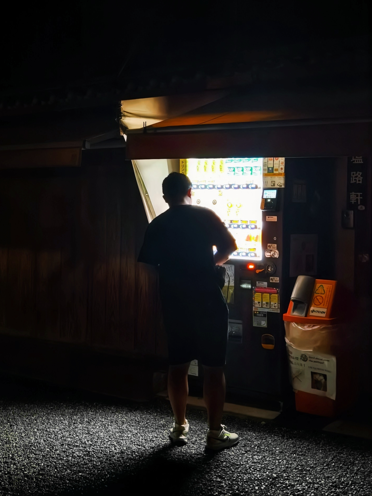
京都 | 圣地巡礼
玉子市场
新一天的早晨，我们沿京阪线来到出町柳站。贯穿京都的小河 「鴨川」 就在这里分岔。走在桥上，远远望见用方形石头在河流上堆出的小路，浓烈的即视感扑面而来。那是饼藏向玉子告白的场景。
|
过桥，来到出町ふたば，我们走进了玉子市场的商业街。挂在悬顶上的大鱼，路边小巧的招牌都和动画里一模一样。两边的商贩都是一般本地人，此时才陆续打开了商店的大门，我不禁开始羡慕起他们。黑板上画着玉子，街道中间悬挂着海报，还有大大的「頑張れ京アニ」，透露着京都人对京阿尼的爱。走到尽头，一个商店的老板向我们展示了粉丝的留言册。这是第23本册子，几乎每一页都有粉丝的作画。 |
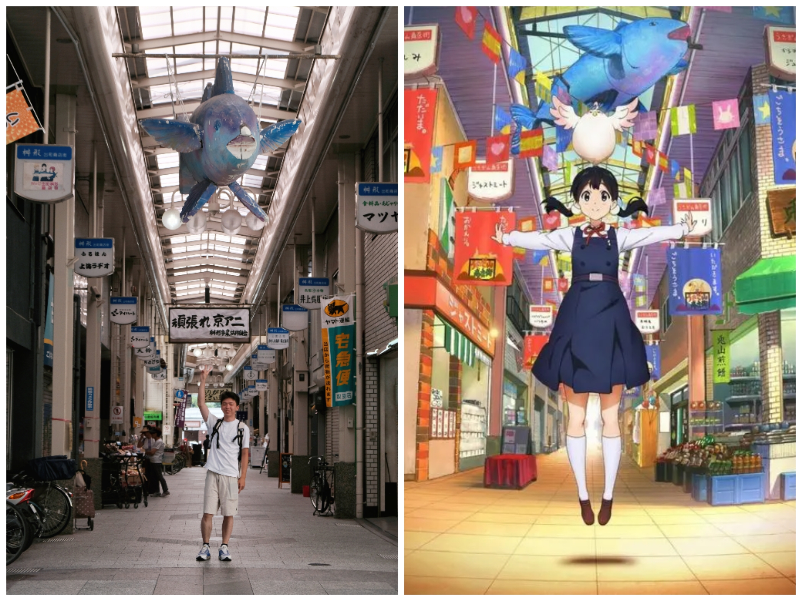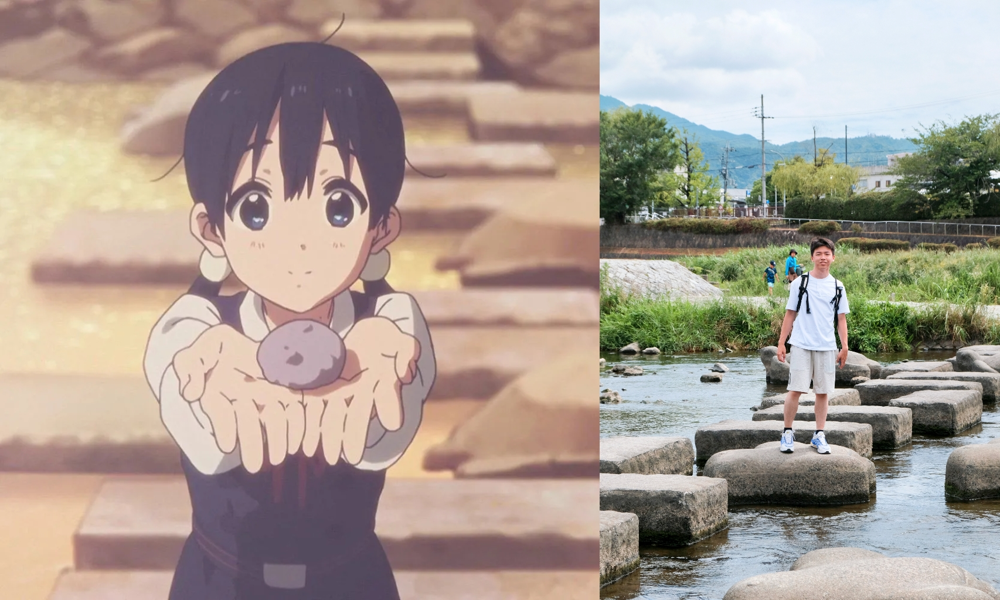 |
中午，赶着祇园祭的末班车在八坂神社，依葫芦画瓢地参拜了神明，然后出发前往藤森站。这是动画里玉子上学的地方。沿着玉子上学的路走到了学校的原型京都圣母学院。这里是女校，我们不敢过多停留拍照，在门口保安的注目礼下匆匆离开。
京阿尼本社
|
从奈良线的木幡站下车，我们还没做好准备，就发现正对着的就是京阿尼本社，只好感叹一句开幕雷击。门前放着的伞表明社内应该有人正在工作，我不敢大声说话，此时的心情仿若朝圣。门上贴着京吹新剧场版的海报，这估计是京阿尼最近最重要的事之一。唯一可惜的是，原本这里有京阿尼的线下周边店，可在今年早些时候已经关闭。 |
 |
響け！ユーフォニアム
顺着奈良线再做两站就到宇治了。不过在此之前，先探访一下现实中的北宇治，京都府立菟道高等学校。菟道高校建在山上，从黄檗地铁站出发，全程是幽静的乡村小路。这条路上完全看不出旅客的痕迹，沿途都是居民区。足足走了20分钟山路，我们来到了这个藏在山路尽头的京都府立菟道高校。每天上下学要走这么长的路，估计久美子背着悠风也是件很辛苦的事吧。


宇治
在奈良线的宇治站下车。刚出站便看到案内所里京吹的立牌，以及圣地巡礼导览手册。
走过宇治桥，久美子曾喊着「うまくなりたい」 在这里泪奔。我们顺着楼梯走到河边，找到了久美子钟爱练习的椅子。
晚饭。我们循着Google 4.8分的推荐，走进了一家不起眼的小店。小店到处都贴着/挂着京吹的周边，老板娘告诉我们可以随便拍照。店里甚至有整整6本粉丝留言，几乎每一页都有粉丝的作画。
京都塔
听闻京都塔正在和京吹联动，我们在十点关闭前赶到了京都塔。
河口湖
离开京都，乘坐新干线到三岛站，然后坐大巴来到河口湖。我们租了自行车，环河口胡骑行一圈。今天下午的天气不是很好，乌云已经把富士山完全遮住，似乎马上就要下雨。不过阴天的好处是空气很凉爽，凉风从河口湖上吹来，加上沿湖几乎没有什么旅客，骑行的体验非常好。

骑到半路，停下在湖边拍照时，感受到零星的雨点，这是不祥之兆。厚重的积云正在从山的那一头向我们这个方向移动。眼见那边乌云下已经是倾盆大雨，我们连忙加快了速度，大雨就追在我们身后。把档位调到6档，我们很快就要骑完20公里回到起点。就在骑去归还自行车的路上，雨势突然开始变大，雨点像渐强的音乐一般，短短半分钟就变成了瓢泼大雨。电影里的最后一分钟情节竟发生在发生在现实里。尽管我们快速地撑起了伞，但鞋子仍旧被雨水完全浸湿。
大雨来得快，走得也快。当我们走到车站附近准备吃晚饭时，雨已经快要停了，终于能看见藏在云层后光秃秃的富士山。虽然没有积雪，火山独特的、平滑的外形依旧使它与众不同。晚饭的地点显然是传统日式风格，我们脱掉鞋盘腿而坐。然而袜子方才早已湿透，非常难受。反复纠结之后，我最终还是选择把袜子也脱掉了。
雨后，罗森的门前都是出来购物的人。喧闹的人却让远处的山显得更安静了，我突然对眼前的便利店有种疏离感，仿佛我们之间隔着看不见的玻璃。
我们在细雨中走回民宿。这是栋建在铁路边的双层小屋，离铁路岔口仅十余米。本以为是废弃的铁路，不想每隔一段时间就有列车驶过。在列车经过前，会伴有长达半分钟的“噔噔噔”的警报声，在黄黑相间的闸门落下后便有列车从门前呼啸而过。
镰仓
东京
涩谷
银座
银座的松屋正好在办 Licoris Recoil 展。
新宿 歌舞伎町
秋叶原
海鸥线
在东京的最后三天，我们从民宿搬到了东京湾的有明华盛顿酒店。途径的海鸥线是条美丽的陆上列车线。由于没有驾驶员，车头是透明的玻璃观光窗。透过窗户看到东京新区的风景。


花火大会
东京塔


须贺神社
隐藏在居民小巷间的须贺神社，是你的名字海报的取景地，游客络绎不绝。比起有着红色扶手的美丽楼梯，楼梯顶端的神社明显被大家冷落了。


下北泽
世界最高城下北泽，孤独摇滚像素级巡礼。这里的风格也确实非常摇滚。碰巧遇上了祭典活动，人们在围着跳舞。
福冈